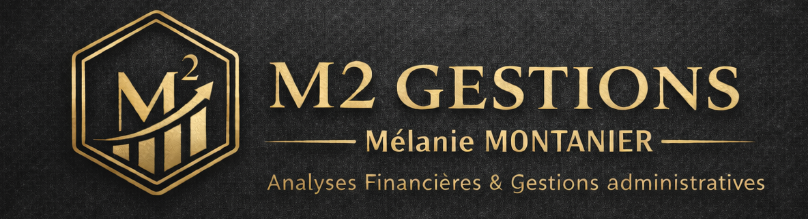

Analyse financière
Analyse de vos chiffres, indicateurs et tableaux de bord pour éclairer vos décisions.

ANALYSES FINANCIÈRES · GESTION ADMINISTRATIVE
M2.GESTIONS accompagne les dirigeants, indépendants et structures qui souhaitent gagner du temps, structurer leur gestion et mieux piloter leur activité.
MON APPROCHE
Vous connaissez votre métier. Je vous aide à garder la maîtrise de votre organisation, de vos chiffres et de vos démarches administratives — avec un accompagnement adapté à votre réalité.
MES SERVICES
Intervention ponctuelle, mission définie ou accompagnement régulier : nous construisons la solution qui vous correspond.
Analyse de vos chiffres, indicateurs et tableaux de bord pour éclairer vos décisions.
Suivi, prévisionnel et anticipation pour mieux piloter vos flux financiers.
Situations périodiques et reporting pour conserver une vision claire de l'activité.
Organisation, suivi des dossiers, facturation et tâches administratives du quotidien.
Suivi administratif des paies, dossiers sociaux et ressources humaines.
Accompagnement administratif lors des changements et évolutions de votre structure.
Préparation et contrôle des éléments pour faciliter le travail avec votre expert-comptable.
Préparez votre entreprise aux évolutions de la facturation électronique et à la dématérialisation.

À PROPOS
Je suis Mélanie Montanier, fondatrice de M2.GESTIONS. Mon parcours dans la comptabilité, la finance et la gestion administrative m'a permis de développer une approche à la fois rigoureuse, concrète et proche des réalités des entreprises.
Mon objectif : devenir un véritable appui pour les professionnels qui ont besoin de visibilité, d'organisation et de temps.
Votre gestion. Mon expertise. Votre sérénité.
ZONES D'INTERVENTION
Je privilégie la proximité lorsque c'est utile et le travail à distance lorsque c'est plus simple.
ISÈRE · 38
Basée à Voiron, j'accompagne les entreprises, dirigeants et indépendants en Isère.
ALPES-MARITIMES · 06
Basée à Théoule-sur-Mer, j'interviens également auprès des professionnels des Alpes-Maritimes.
FORMULES
Pour une question, un besoin ponctuel ou un renfort ciblé.
Pour un projet défini : analyse, organisation, mise en place ou évolution.
Pour un accompagnement régulier et une gestion suivie dans la durée.
BESOIN D'UN RENFORT ?
CONTACT
Décrivez-moi votre activité, votre besoin et votre zone géographique. Le formulaire prépare automatiquement un e-mail que vous pourrez envoyer depuis votre messagerie.